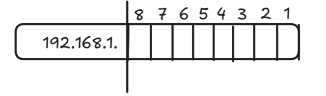
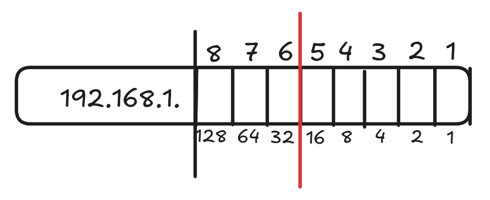
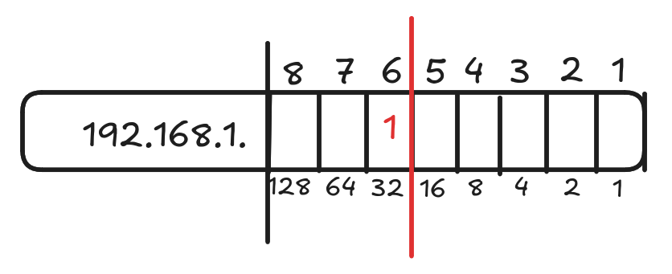

Direccionamiento IPv4 y subredes del tamaño adecuado
Hace poco he estado aprendiendo el como funcionan las direcciones IPv4, me han enseñado todo lo que es necesario para que un equipo con conexión a la red funcione correctamente, el Gateway, servidores DNS, La máscara de red...
Pero hace poco me han enseñado de las subredes, y yo decia, ¿Pero para que sirve hacer una subred?. Pues la verdad es que es bastante importante.
Imaginemonos que tengo una direccion IP, la 192.168.0.1 /24, una direccion IP que seguramente cualquier persona con un minimo de conocimiento en redes le suene, ahora imaginemosnos que tengo 2 habitaciones y no quiero que los de la habitación A se puedan comunicar con los de la habitación B, para eso están las subredes,
Pongamos que quiero 30 equipos por cada red, pues tendriamos que hacer lo siguiente:
1º Tenemos en cuenta la dirección IP original, la 192.168.0.1 con prefijo /24
2º Vamos a "desmenuzar" la dirección IP, una dirección IPv4 está compuesta por 4 octetos con 8 bits cada uno
3º Dado que el prefijo de red es /24, lo que nos muestra que 24 de los 32 bits que componen una dirección IPv4 están destinados a la parte de red, mientras que 8 están destinados a los hosts, "desmenuzamos" de la siguiente forma:

Aquí podemos ver la dirección IP, la raya mas alta nos muestra donde estaria el limite de la parte de red, ahora, ¿que tenemos que hacer para crear una subred que pueda tener hasta 30 hosts?
Facil, tenemos que tener en cuenta la la posición de los bits y los valores que representa dentro del octeto, me explico mejor:

El primer bit por la derecha valdria 1, el 2º valdria 2, el 3º bit valdria 4, el 4º bit valdria 8, el 5º bit valdria 16, el 6º 32, el 7º 64 y por ultimo el 8º 128, estos son hosts que nos dejaria tener, que en total si los sumamos todos no daria 255, al que habria que quitarle 2, la direccion de broadcast y la dirección de red.

Muy bien, dicho esto, ¿cual necesito?, el 6º bit que me deja tener 32 bits, que -2 serian 30 equipos direccionables, muy bien pues me voy a ese bit y le pongo un 0, pero, ¿y los bits anteriores a ese?.
Esos bits pasan a ser parte de la parte de red de nuestra dirección IP, por lo que el prefijo de red ya no seria un /24, sino un /27
Por lo que podriamos decir que la primera red tendria los siguientes valores:
• Dirección de red: 192.168.0.0 /27
• Dirección de broadcast 192.168.0.31 /27
• Rango de IP's útiles: 192.168.0.1 - 192.168.0.30
Muy bién, pues ya tendriamos la red A, pero ¿y la red B?

Fácil, cambiamos el bit que habiamos puesto a 0 por un 1, lo que nos dejaria ver que la red B tendria los siguientes valores:
• Dirección de red: 192.168.0.32 /27
• Dirección de broadcast 192.168.0.64 /27
• Rango de IP's útiles: 192.168.0.33 - 192.168.0.63
Se que es un poco complicado de entender y que esto se complica mucho, pero en esencia seria esto